Zenithonacademy
Placar da Verdade · ao vivo
Como o site aguenta milhares de pessoasUma cópia de 3 segundos no Cloudflare e um porteiro que conta quem está vendo
Simulação
Seu notebook
Robô
grava o placar.json a cada fato novo
↓ envia
Cloudflare R2
O original
placar-dados.zenithonacademy.com.br
⇄
Cache do Cloudflare
Cópia de 3s
Todo mundo recebe a cópia.
Só 1 pedido a cada 3s vai ao original.
→
Durable Object
O porteiro
uma linha aberta (WebSocket) com cada aba
Pessoas com o site aberto
0pessoas assistindo agora
0pedidos ao original